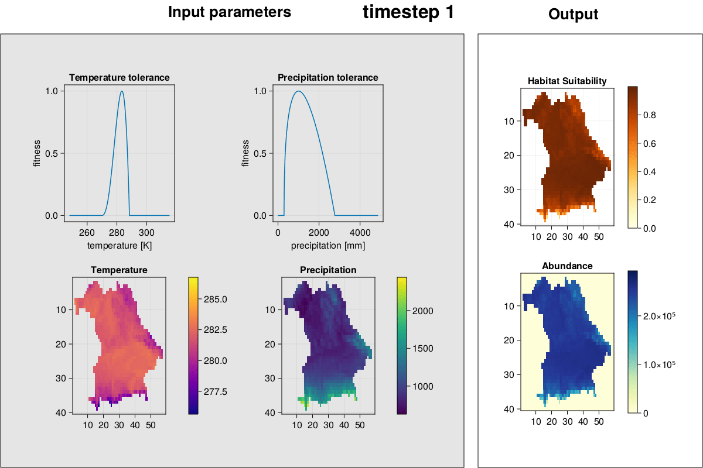
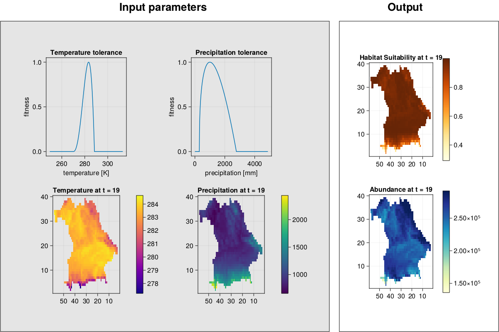

Developers
How to contribute
Accessing the internal Data
Simulation Data Object
To directly check the results and to do more detailed analyses directly inspect the Simulation_Data object. In julia this is done by looking at the fields with the period character .. So to see the final population size of the first species you would use:
SD.species[1].abundances[:,:,end]Internal structures
MetaRange.Chunk — TypeChunkStruct for saving chunk coordinates
Fields
x::Inty::Int
MetaRange.Duration — TypeDurationStruct for saving the length of the runtime for the entire simulation.
Fields
start_time::DateTime: time when simulation was startedend_time::DateTime: time when simulation has finished
MetaRange.Env_Preferences — TypeEnv_PreferencesStruct for saving the environmental preferences of a species.
Fields
upper_limit::Float64: species parameterlower_limit::Float64: species parameteroptimum::Float64: species parameter
MetaRange.Landscape — TypeLandscapeStruct representing the landscape/environment.
Fields
xlength::Int64: equivalent to size[2] of any Array in this structylength::Int64: equivalent to size[1] of any Array in this structenvironment::Dict{String, Array{Float64, 3}}: contains all environment attributes,
addressable by name
restrictions::Array{Float64, 3}: #TODO
MetaRange.Output — TypeOutputrepresents the output of a simulation run for a species.
Fields
abundances: amount of individuals for each species in each timestephabitat: habitat suitability for each species in each timestepcarry: carrying capacity for each species in each timestepgrowrate: growth rate for each species in each timestepbevmort: background mortality rate for each species in each timestep
MetaRange.Simulation_Data — TypeSimulation_DataStruct for saving all data related to the simulation
Fields
parameters::Simulation_Parameters: simulation parameters of the experimentlandscape::Landscape: landscape of the experimentspecies::Vector{Species}: a vector of all the species in the experimentduration::Duration: saves the duration the experiment took to compute
MetaRange.Simulation_Parameters — TypeSimulation_ParametersStruct for saving simulation parameters.
Fields
experiment_name::String: name of the experimentconfig_dir::String: path to the folder containing the config_fileconfig_file::String: path to the config_fileoutput_dir::String: path to the folder where the output should be savedspecies_dir::String: path to the folder containing the species definitionsenvironment_dir::String: path to the folder or file containing the environment tablesinput_backup::Bool: if true, the input files will be copied to the output folderenv_attribute_files::Dict{String, String}: #TODOenv_restriction_files::Dict{String, String}: #TODOenv_attribute_mode::String: #TODOenv_restriction_mode::String: #TODOattribute_restriction_blending::String: #TODOtimesteps::Int64: number of timesteps in the simulationrandomseed::Int64: seed for number generator used in the simulationreproduction_model::String: #TODOuse_metabolic_theory::Bool: #TODO
#- use_stoch_allee::Bool: if true the allee effect will be stochastic #- use_stoch_carry::Bool: if true the carrying capacity will be stochastic
use_stoch_num::Bool: #TODO Stochastic Survival see R codeinitialize_cells::String: #TODO
MetaRange.Simulation_Variables — TypeSimulation_VariablesSimulation variables used for a species during run_simulation!"
Fields
habitat::Array{Float64, 2}: habitability of landscape cells for a species at current
simulation timestep
is_habitat::BitArray{2}: if landscape cells are habitable for a species at current
simulation timestep
future_habitat::Array{Float64}: TODOfuture_is_habitat::BitArray{2}: if landscape cells are habitable for a species at next
simulation timestep
biomass::Array{Float64, 2}: biomass of a species individual at landscape cellsgrowrate::Array{Float64, 2}: growrate of species at landscape cellscarry::Array{Float64, 2}: carry property of species at landscape cellsallee::Array{Float64, 2}: allee property of species at landscape cellsbevmort::Array{Float64, 2}: Beverton mortaility of species at landscape cellsoccurrences::Vector{CartesianIndex{2}}: list of cells where species occurs at current
timestep
offspring::Array{Float64, 2}: offspring of species at current timestep
MetaRange.Species — TypeSpeciesSaving all data related to a species.
Fields
species_name::String: name of the speciestraits::Traits: a (Traits)[@ref] struct for the speciesabundances::Array{Union{Int64, Missing}, 3}: amount of individuals of this species in
each timestep
habitat::Array{Float64, 3}: habitat suitability in each timestepdispersal_kernel::Matrix{Float64}:#TODOvars::Simulation_Variables:#TODO
MetaRange.Traits — TypeTraitsTraits of a species.
#TODO: Add description in fields
Fields
mass::Float64:sd_mass::Float64:growrate::Float64:sd_growrate::Float64:param_const_growrate::Union{Float64, Nothing}:max_dispersal_dist::Int64:max_dispersal_buffer::Int64:mean_dispersal_dist::Union{Int64, Float64}:allee::Float64: Allee effect counteracting negative diversity loss in small populationssd_allee::Float64: Allee effect standard deviationparam_const_allee::Union{Float64, Nothing}:bevmort::Float64:sd_bevmort::Float64:param_const_bevmort::Union{Float64, Nothing}:carry::Float64:sd_carry::Float64:param_const_carry::Union{Float64, Nothing}:env_preferences::Dict{String, Env_Preferences}:habitat_cutoff_suitability::Float64:
MetaRange.BV — MethodBV(N::Int64, growrate::Float64, carry::Float64, mortality::Float64)Returns the number of individuals in the next generation according to the Beverton-Holt model. Includes stochastic mortality.
MetaRange.BVNoStoch — MethodBVNoStoch(N::Int64, growrate::Float64, carry::Float64, mortality::Float64)Returns the number of individuals in the next generation according to the Beverton-Holt model. Does not include stochastic mortality.
MetaRange.DispersalNegExpFunction — MethodDispersalNegExpFunction(alpha, r)TODO
MetaRange.DispersalNegExpKernel — MethodDispersalNegExpKernel(Dispersalbuffer, mean_dispersal_dist)TODO
MetaRange.DispersalSurvivalRound — MethodDispersalSurvivalRound(
Abundances::Array{Union{Missing, Int64},2},
Offspring::Array{Float64,2}, xy::Array{Int64,2},
max_dispersal_dist::Int64
)TODO
MetaRange.DispersalSurvivalStoch — MethodDispersalSurvivalStoch(
Abundances::Array{Union{Missing, Int64},2},
Offspring::Array{Float64,2},xy::Array{Int64,2},
max_dispersal_dist::Int64
)TODO
MetaRange.Disperse! — MethodDisperse!(
species::Vector{Species},
LS::Landscape,
groups::NTuple{4, Vector{Chunk}},
timestep::Int64,)
Dispersal
MetaRange.GetDisjunctChunkGroups — MethodGetDisjunctChunkGroups(
max_dispersal_buffer::Int64,
size::Tuple{Int64, Int64, Int64},)
Calculate the distinct chunk groups
MetaRange.GetDispersalSurvival — MethodGetDispersalSurvival(use_stoch_Num::Bool)TBW
MetaRange.GetReproductionModel — MethodGetReproductionModel(reproduction_model::String)TBW
MetaRange.HabitatMortality — MethodHabitatMortality(Abundances::Matrix{Union{Missing,Int64}}, Is_habitat::BitArray{2})Habitat based mortality.
This function kills individuals that are in non suitable Habitat.
Abundances: array with the number of individuals in the landscapeIs_habitat: array with boolean values that indicate
which cell is habitat in the next timestep
MetaRange.KernelDispersal! — MethodKernelDispersal!(N::Int64, Offspring::Array{Float64,2}, Dispersal_kernel::Array{Float64,2})TODO
MetaRange.MortalityBev — MethodMortalityBev(N::Int64, mortality::Float64)Returns how many Individuals die. Includes Stochasticity
MetaRange.MortalityBevNoStoch — MethodMortalityBevNoStoch(N::Int64, mortality::Float64)Returns how many Individuals die. No Stochasticity
MetaRange.ReproductionBeverton — MethodReproductionBeverton(N::Int64, growrate::Float64, carry::Float64, mortality::Float64)Returns the number of offspring in the next generation according to the Beverton-Holt model.
MetaRange.ReproductionRicker — MethodReproductionRicker(N::Int64, growrate::Float64, carry::Float64, unused::Union{Float64,Nothing})Returns the number of Individuals in the next generation according to the Ricker model.
MetaRange.ReproductionRickerAllee — MethodReproductionRickerAllee(N::Int64, growrate::Float64, carry::Float64, allee::Union{Float64,Nothing})Returns the number of Individuals in the next generation according to the Ricker model. Includes allee effects
MetaRange.Survive! — MethodSurvive!(species::Vector{Species}, DispersalSurvival, t::Int64)TBW
MetaRange.backup_config — Methodbackup_config(SD::Simulation_Data, backup_path::String)Record the settings actually used for a simulation run and creates a config file that can be used for future replicate runs.
MetaRange.backup_input — Methodbackup_input(SP::Simulation_Parameters)Initializes the output directory. This is called when input_backup in the configuration file is set to true and creates a backup of the input files in the output directory.
MetaRange.check_attribute_values! — Methodcheck_attribute_values!(attribute::Array{Float64}, key::String)Sanity checks for Attribute Matrices. Will convert Celsius values to Kelvin.
MetaRange.check_environment_dir — Methodcheck_environment_dir(config::Simulation_Parameters)Checks if the environment directory exists and throws an error if it doesn't.
MetaRange.check_for_nan — Methodcheck_for_nan(attribute::Array{Float64})Checks for NaNs in parameter matrix
MetaRange.check_species_dir — Methodcheck_species_dir(config::Simulation_Parameters)Checks if the species directory exists and throws an error if it doesn't.
MetaRange.demo_input — Methoddemo_input()Initializes a simple default run Simulation_Data struct.
MetaRange.df_output — Methoddf_output(SD::Simulation_Data)Create a dataframe from the output of a simulation.
Arguments
SD::Simulation_Data: ASimulation_Dataobject containing the output data.
Returns
- A
DataFrameobject with the following columns:t: timex: x-coordinate of the patchy: y-coordinate of the patchabundance: abundance of the species in the patchreproduction: growth rate of the species in the patchhabitat: habitat suitability of the patchcarry: carrying capacity of the patchbevmort: background mortality rate of the species in the patch
Examples
julia> df = df_output(SD)MetaRange.disperse_chunk! — Methoddisperse_chunk!(
species::Species,
occurrences::Vector{CartesianIndex{2}},
offspring::Matrix{Float64},
chunk::Chunk,
t::Int64,)
Parallel Dispersal in a given chunk
MetaRange.get_Env_Preferences — Methodget_Env_Preferences(species::Dict, key::String)Returns the environmental preference for the supplied trait in key with limits and optimum as an Env_Preferences object.
MetaRange.get_Simulation_Parameters — Methodget_Simulation_Parameters(config::Dict)Returns a Simulation_Parameters object constructed from the configuration Dictionary.
MetaRange.get_Simulation_Variables — Methodget_Simulation_Variables()Initializes an empty Simulation_Variables object. Each parameter is defined with an empty matrix eqivalent to the landscape's size.
MetaRange.get_Traits — Methodget_Traits(species::Dict)Extracts species traits from the configuration dictionary and returns a Trait object.
MetaRange.get_biomass — Methodget_biomass(mass, sd_mass, ysize, xsize)TBW
MetaRange.get_default_LS — Methodget_default_LS()Creates a Default Landscape with random values and some NAs for testing.
MetaRange.get_default_simulation_parameters — Methodget_default_simulation_parameters()Returns a Dictionary with default simulation parameters.
MetaRange.get_default_species — Methodget_default_species(LS::Landscape, SP::Simulation_Parameters)TBW
MetaRange.get_environment_dir — Methodget_environment_dir(config::Simulation_Parameters)Returns full path to environment folder or returns config_dir/environment when no path to the species folder is provided.
MetaRange.get_habitat — Methodget_habitat(
env_pref::Dict{String, Env_Preferences},
LS::Landscape,
attribute_mode::String,
t::Int)
Get habitat in current timestep. Return Array{Float64, 2}
MetaRange.get_is_habitat — Methodget_is_habitat(habitat, habitat_cutoff_suitability)TBW
MetaRange.get_out_dir — Methodget_out_dir(SP::Simulation_Parameters)Names a new output directory for the simulation used in backup_input()[@ref]. This directory will only be created if backup is true or the user later saves an output into the default paths
MetaRange.get_pop_bevmort — Methodget_pop_bevmort(
traits::Traits,
LS::Landscape,
habitat::Array{Float64,2},
mass::Union{Float64,Array{Float64,2}},
use_metabolic_theory::Bool,
timestep::Int,
E::Float64,)
TBW
MetaRange.get_pop_carry — Methodget_pop_carry(
traits::Traits,
LS::Landscape,
habitat::Array{Float64,2},
mass::Array{Float64,2},
use_metabolic_theory::Bool,
timestep::Int,
E::Float64,)
TBW
MetaRange.get_pop_var — Methodget_pop_var(
trait::Float64,
sd_trait::Float64,
exp_trait::Float64,
param_const_trait::Union{Float64,Nothing},
traits::Traits,
LS::Landscape,
mass::Array{Float64,2},
use_metabolic_theory::Bool,
timestep::Int, E::Float64,)
TBW
MetaRange.get_species_dir — Methodget_species_dir(config::Simulation_Parameters)Returns full path to species folder or returns config_dir/species when no path to the species folder is provided.
MetaRange.get_testrun_simulation_parameters — Methodget_testrun_simulation_parameters()TBW
{kind=link}
MetaRange.gif — Functiongif(SD::Simulation_Data, arg::String, frames::Int)Plots the specified output for timestep t.
Arguments
SD::Simulation_Data: Simulation_Data objectarg::String: argument on what shall be displayed. Must be one of restrictions, abundances, suitability, temperature, precipitation, carry, growrate, or mortality.frames::Int: number of frames per second
Returns
- The gif is saved under the name "arg.gif" in the output directory.
MetaRange.gif_complex — Methodgif_complex(SD::Simulation_Data; frames = 2)Plot environment, species environmental preferences, habitat suitability, and abundances and create a GIF.
Arguments
SD::Simulation_Data: Simulation_Data objectframes::Int: framerate
Returns
- The gif is saved under the name "all.gif" in the output directory.
Examples
julia> gif_complex(SD)
MetaRange.img — Methodimg(SD::Simulation_Data, t::Int, arg::String)Plots the specified output for timestep t.
Arguments
SD::Simulation_Data: Simulation_Data objectt::Int: timesteparg::String: argument on what shall be displayed. Must be one of restrictions, abundances, suitability, temperature, precipitation, carry, growrate, or mortality.
Returns
f::Figure: Figure object
MetaRange.img_complex — Methodimg_complex(SD::Simulation_Data, t::Int)Plot environment, species environmental preferences, habitat suitability, and abundances for a given timestep.
Arguments
SD::Simulation_Data: Simulation_Data objectt::Int: timestep
Returns
f::Figure: Figure object
Examples
julia> f = img_complex(SD, 19)
julia> f
MetaRange.init_species_sim_vars! — Methodinit_species_sim_vars!(
species::Array{Species},
LS::Landscape,
parameters::Simulation_Parameters,
timestep::Int,)
TBW
MetaRange.initialize_abundances — Methodinitialize_abundances(
SP::Simulation_Parameters,
habitat::Array{Float64, 2},
carry::Float64)Initialization of Abundances.
MetaRange.initialize_output — Methodinitialize_output(
SP::Simulation_Parameters,
LS::Landscape,
abundances::Array{Int64,3},
habitat::Array{Float64,3},)
Initializes the output struct. Calculation of the first timesteps is done outside the function.
MetaRange.make_out_dir — Methodmake_out_dir(out_dir::String)create an output directory if it does not exist
MetaRange.parse_environment_parameters! — Methodparse_environment_parameters!(config::Dict, input_config::Dict)Build the Dicts containing environment attribute and restriction files.
MetaRange.parse_species_datatypes! — Methodparse_species_datatypes!(species::Dict)Convert all Float and Integer arguments to their respective Julia types (as needed for the species)
MetaRange.plot_abundances — Methodplot_abundances(SD::Simulation_Data)Plot the total abundances of a species over time.
Arguments
SD::Simulation_Data: Simulation_Data object
Returns
f::Figure: Figure object
Examples
julia> f = plot_abundances(SD)
julia> f
MetaRange.randomize! — Methodrandomize!(value,sd)Takes a parameter or array of parameters and modifies it according to a lognormal distribution based on standard deviation sd
MetaRange.read_input — Methodread_input(path::String)Read in the configuration and associated files in the folder and return a Simulation_Data struct.
Arguments
path::String: Path to the configuration file.
Returns
SD::Simulation_Data: Returns the initialised simulation data struct with the first timestep.
Examples
julia> SD = read_input("path/to/config.csv")
precipitation
temperature
...See also run_simulation!(), Simulation_Data
MetaRange.read_species_dir — Methodread_species_dir(species_dir::String, LS::Landscape, SP::Simulation_Parameters)Read species directory, calculate properties and parameters if not provided and return as a vector of Species objects.
MetaRange.read_ts_config — Methodread_ts_config(env_dir::String, ls_timeseries_config::String)Returns the timeseries generator configuration as a Dict (no struct as it's only used once)
MetaRange.reproduce! — Methodreproduce(species, reproduction, timestep)Reproduction function. Takes a vector of species structs, a reproduction function and a timestep and calculates the amount of species in the next timestep.
MetaRange.run_simulation! — Methodrun_simulation!(SD::Simulation_Data)Run an ecological simulation.
Take the initialized simulation data SD and run the simulation for the specified number of timesteps.
Arguments
SD::MetaRange.Simulation_Data: MetaRange simulation data struct produced by
Returns
SD::MetaRange.Simulation_Data: Returns the struct with later timesteps after initialisation simulated.
Examples
julia> run_simulation!(SD)See also read_input(), Simulation_Data
MetaRange.save_output — Methodsave_output(SD::Simulation_Data)Save all output variables in a .tsv file.
This function writes all output variables abundance - into a .tsv file.
Arguments
SD::Simulation_Data: Simulation_Data object
Returns
- A
.tsvfile with the following columns in theoutputdirectory`:t: timex: x-coordinate of the patchy: y-coordinate of the patchabundance: abundance of the species in the patchreproduction: growth rate of the species in the patchhabitat: habitat suitability of the patchcarry: carrying capacity of the patchbevmort: background mortality rate of the species in the patch
Examples
julia> save_output(SD)MetaRange.sp_sanity_checks! — Methodsp_sanity_checks!(config::Dict)Check if necessary configuration fields are missing
MetaRange.species_default — Methodspecies_default()Returns a dictionary of default species